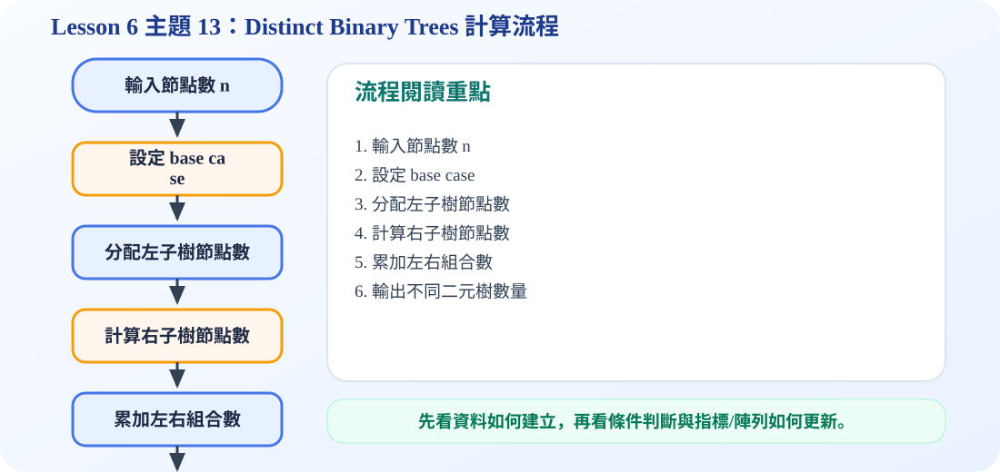

核心觀念動畫
投影片上的公式可寫成 Catalan number：有 n 個節點時，不同 binary tree 數量為 C(2n,n)/(n+1)。
一、什麼叫做「不同」二元樹？
二元樹會區分 left child 與 right child，所以即使節點數相同，只要某個節點是放在左邊或右邊不同，就算不同的樹。例如只有 2 個節點時，第二個節點可以是 root 的左子樹，也可以是 root 的右子樹，因此有 2 種。
二、為什麼會用 Catalan number？
因為每一棵 binary tree 都可以看成「root + left subtree + right subtree」。假設左子樹有 i 個節點，右子樹就有 n-1-i 個節點。左邊的可能數乘上右邊的可能數，再把所有 i 的情況加起來，就是總數。
三、節點數 1、2、3 的例子
當 n 增加時，可能的樹形會快速增加，所以這個公式常用來計算「形狀可能性」。
C 程式碼：計算不同 Binary Trees 數量
/*
中文註解版程式：distinct_binary_trees.c
說明：主題 13：不同 Binary Trees 數量。使用 Catalan number 的 DP 公式計算 n 個節點可形成幾種二元樹。
閱讀方式：先看資料結構定義，再看操作函式，最後看 main() 如何測試。
*/
// 匯入標準輸入輸出函式庫，提供 printf / scanf 等功能。
#include <stdio.h>
// 動態規劃計算 Catalan number：代表 n 個節點的不同二元樹數量。
long long catalan(int n) {
long long dp[50] = {0};
dp[0] = 1;
for (int nodes = 1; nodes <= n; nodes++) {
for (int left = 0; left < nodes; left++) {
int right = nodes - 1 - left;
dp[nodes] += dp[left] * dp[right];
}
}
return dp[n];
}
// 主程式：建立測試資料，呼叫上方函式，觀察輸出結果。
int main() {
int n;
printf("Enter number of nodes: ");
scanf("%d", &n);
printf("Number of distinct binary trees with %d nodes = %lld\n", n, catalan(n));
return 0;
}
可編輯 C 程式範例：含中文註解與線上編輯器
這一段提供可直接修改的 C 程式碼。可以按「複製程式」貼到線上編輯器執行，也可以下載 .c 檔案。
程式題目教學內容：Distinct Binary Trees 數量計算
一、程式題目講解
本題用 Catalan number 計算 n 個節點可以形成多少種不同二元樹。學生需要理解：每一個節點都可以被選為 root，左子樹與右子樹的組合數會相乘。
二、完整程式碼
完整可執行程式碼已保留在上方「可編輯 C 程式範例：含中文註解與線上編輯器」區塊中，檔名為 distinct_binary_trees.c。該程式碼已加入中文註解，學生可以直接複製到 OnlineGDB、Programiz 或 OneCompiler 執行。
三、程式執行結果
範例輸入：3
Enter number of nodes: Number of distinct binary trees with 3 nodes = 5範例輸入 3 時輸出 5，代表 3 個節點可形成 5 種不同二元樹。這是 Catalan number C3 的結果。
四、程式流程圖與流程圖說明
本頁下方已保留原本的程式流程圖。閱讀流程圖時，可以依序掌握「初始化資料或節點 → 執行主要函式或判斷 → 輸出結果」的過程。先輸入節點數 n，再建立 dp 陣列。dp[0] 設為 1，接著從 1 到 n 逐步計算；每個 nodes 數量都枚舉 left 節點數，right 則是 nodes - 1 - left，最後加總左右子樹組合。
五、重要函數與語法說明
catalan(int n)：計算不同二元樹數量；dp[]：儲存已計算過的 Catalan 數；scanf()：讀入節點數；long long：避免較大結果超出 int 範圍。
六、整體說明
本題重點是不同二元樹的數量可以用動態規劃累加，核心公式是左子樹數量乘上右子樹數量再加總。
程式流程圖：Distinct Binary Trees 計算流程
下圖是本主題對應的程式執行流程，適合搭配本頁 C 程式碼一起看。

流程講解
- 不同二元樹數量可用遞迴分解。
- 對每一種左子樹節點數 i，右子樹節點數就是 n-1-i。
- 左右子樹的可能數量相乘，就是該分配方式的組合數。
- 把所有分配方式加總，即得到 n 個節點可形成的不同 binary trees 數量。
這張流程圖把本頁程式的執行順序整理成一條清楚路徑。閱讀時先看輸入與資料如何建立，再看條件判斷、指標或陣列索引如何改變，最後用輸出結果確認程式邏輯是否正確。